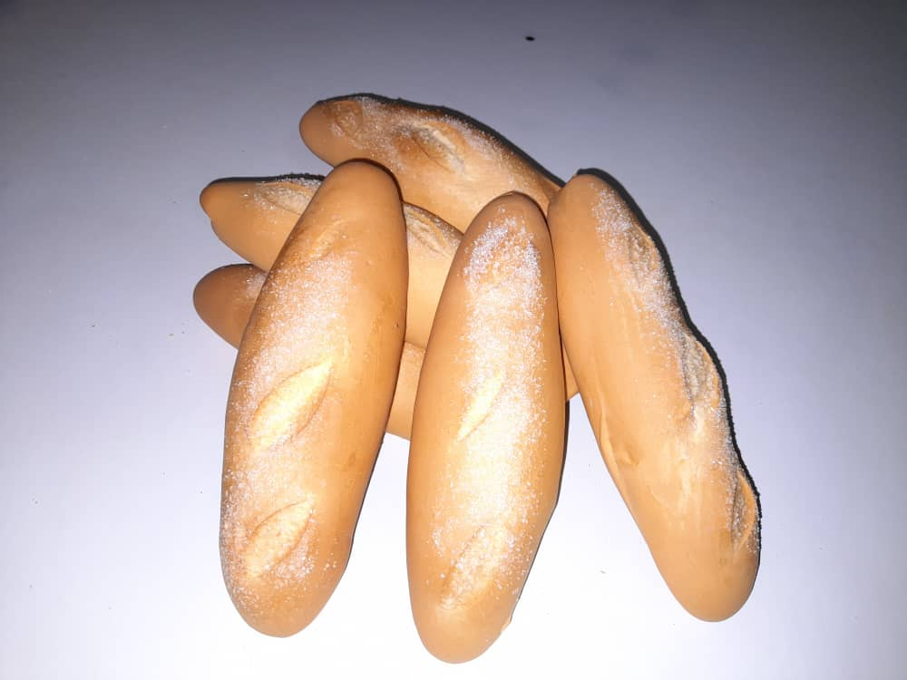

Se conoce como pan dulce, pan de dulce, pan galleta o pan de azúcar a las variedades del pan que se
elaboran con azúcar u otro endulzante. El pan de dulce se distingue por qué es un postre, por su elaboración y
presentación final de otros panes como los birotes, teleras y bolillos, y del pan de caja. Este pan se elabora:

Pan Andino (Camaleón)
Este es un pan muy apreciado en la región andina y el resto de Venezuela. Posee un sabor característico por el papelón
y los clavitos de olor. Su corteza es delgada de color dorado y miga fina y delicada, aromatizado con vainilla y especias,
dándole el rico olor propio de este pan. Se recomienda consumirlo con chocolate caliente o café con leche caliente, la miga
de este pan actúa como una esponja absorbiendo rápidamente el líquido.
Pan Español
Suele ser alargado pero en formato pequeño (aproximadamente 15 cm). Generalmente se usan para preparar lo que conocemos
como balas frías, sándwiches o como dicen en España, bocadillos.
Pan Piñita
Uno de los panes más queridos por los venezolanos, es el Pan Piñita o Pancito Dulce. Es el más común de todos los
panes dulces y se consigue en casi todas las panaderías de Venezuela. Se puede comer con mantequilla y quesos frescos o
solo, también con café con leche o chocolate caliente y es unos de los recuerdos más memorables de la infancia.
Te mostramos esta receta facilita para que lo disfrutes en casa